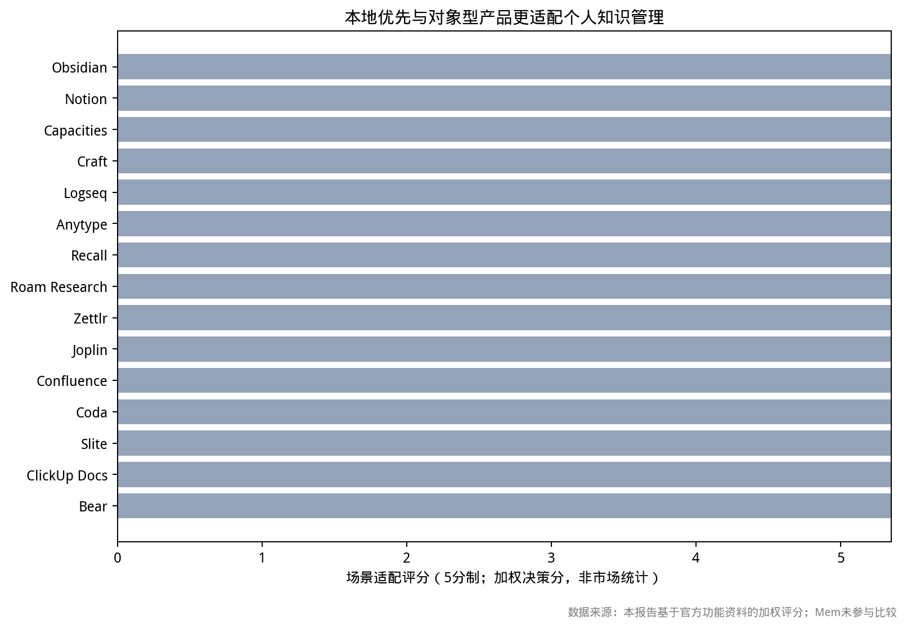

这是一个 HTML 笔记：左侧编辑源码，右侧显示整页渲染结果。
页面的 <style>、<script>、本地相对 CSS/JS
和图表都在应用内置 WebView 的 sandbox iframe 中执行，不进入应用主文档，也
不需要 Edge / Chrome。
| 格式 | 编辑器 | 预览 |
|---|---|---|
| Markdown | Markdown 语法 | marked 渲染 |
| HTML | HTML 语法 | 内置 WebView 原生渲染 |
相对路径图片通过 rmd 协议读取，并可导出到 PNG / PDF / HTML：

<section class="note">
<h2>Hello</h2>
</section>// 这段脚本在 sandbox iframe 中执行
document.body.dataset.scriptRan = 'yes';